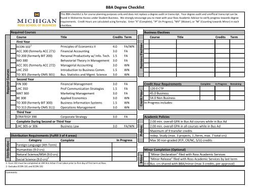

Easily navigate to your email and stay aware of deadlines.
This first goal is as easy as it sounds, but is still one of the most important steps before starting college! We will walkthrough logging into your student account, which includes finding the information for you to login to your school website. We will utilize the email you used to sign up for college to do this, as usually, your school will email you your student ID number, unique login, and your student email. Once we find your login credentials, we will use that information to login to your school for the first time. Once there, we will set up your email notifications and marvel at your new school email!
Contact your advisor to check in when needed.
The next step will be learning how to contact your advisor to check in, ask questions, and have guidance throughout college. First off, your advisor is your northern light in the darkness. If there is anything you need to know, they can either tell you the answer or point you to someone else who can. Advisors job is to help students, both new and old, so it’s important that you use them as a tool for your success. To contact them for matters that won’t take long, you could send them an email, or for subjects that require investigation and discussion, you can set up a meeting. Colleges usually will have a system set up for you to see all your connections and set up meetings for them. In this system, you can also set the reason for the meeting and input any additional details that may help.
Check your progress towards completing your degree at any time.
Another important step is being able to check on your degree progress at any time. You can request a degree audit via your school whenever you need to check. Requesting a degree audit allows you to see what classes you have taken and that you are going to take, and compares that to whichever degree you select. You can choose the degree that you are currently pursuing or one that you may be interested in. The degree audit will let you know all the required courses needed to obtain the degree selected. This is important because you can also use it to double check that you are entered into the correct degree path and that nothing is entered incorrectly.
